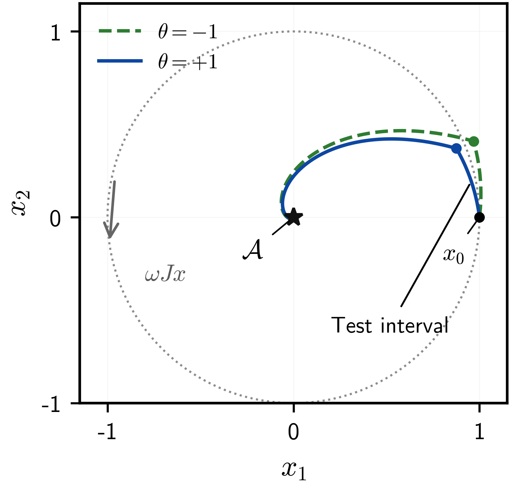
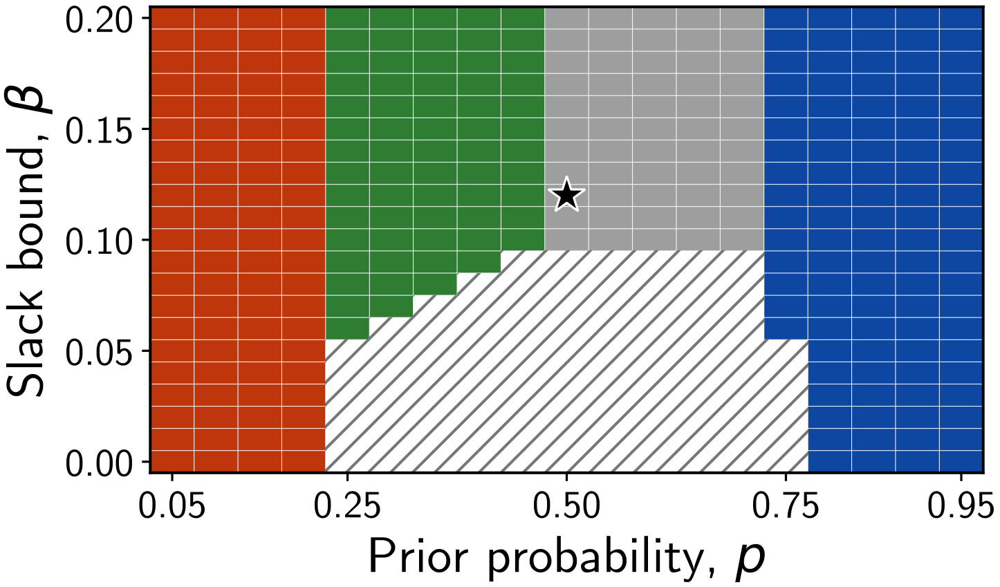
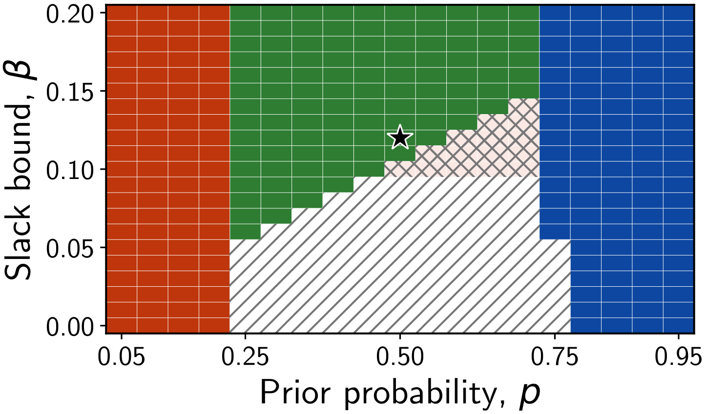
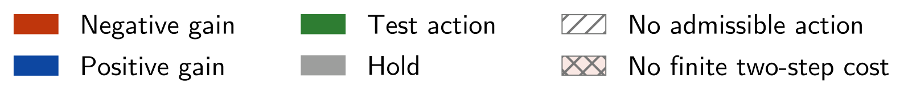
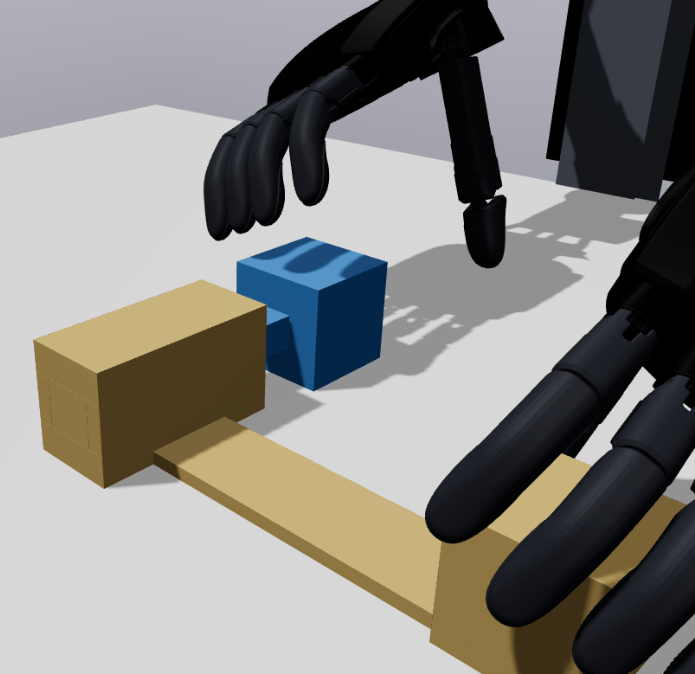
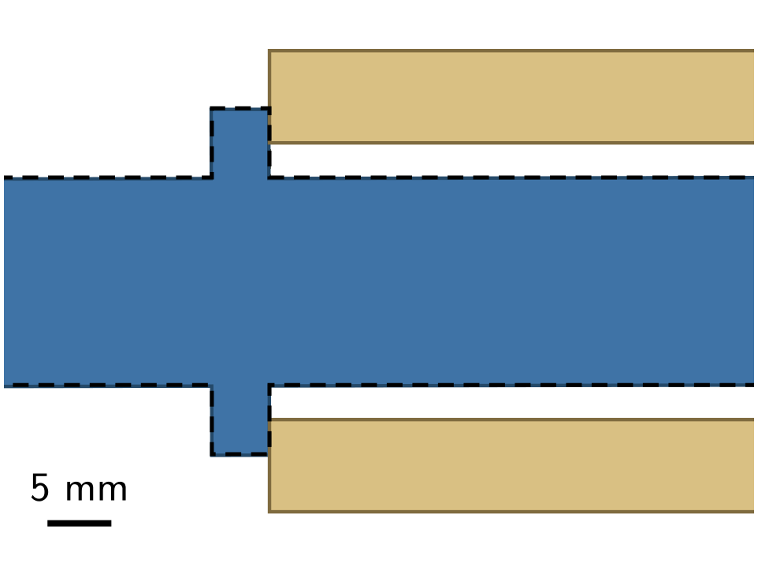
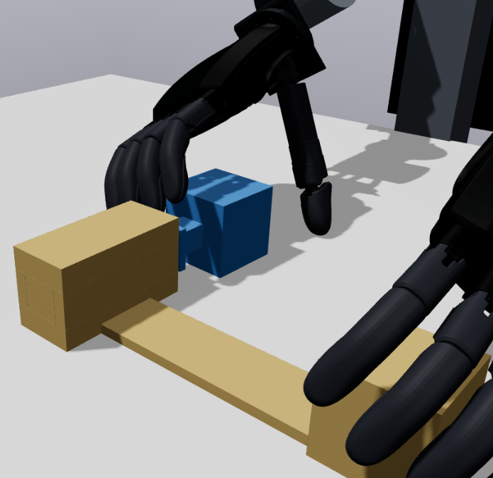
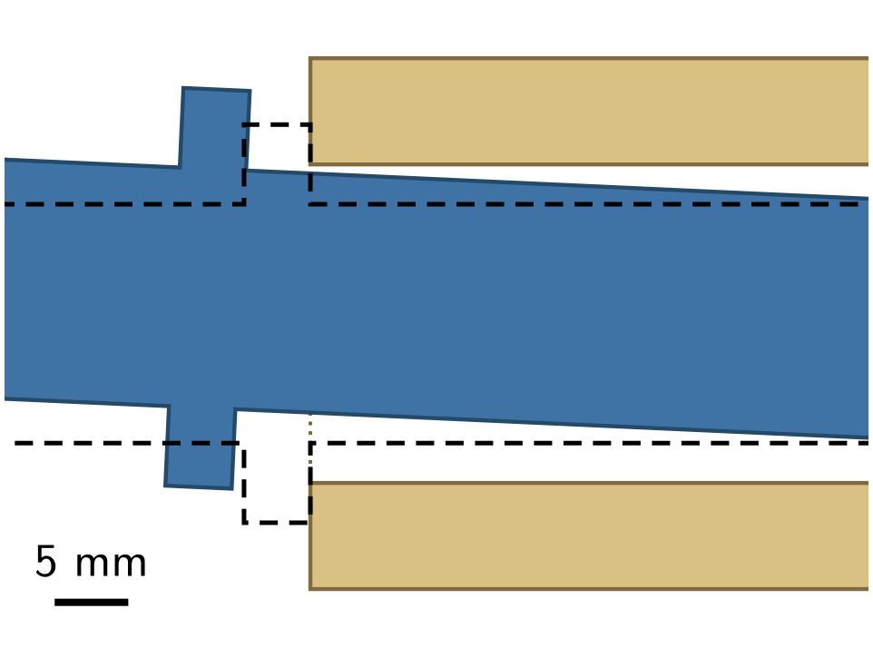

Bimanual Assembly Demonstration
Belief-Space Receding-Horizon Action Selection
We consider a hybrid system with continuous flows, discrete mode transitions, and an unknown parameter that remains fixed during an execution. Each candidate feedback action specifies a feedback law and a stopping rule. We maintain a probability distribution over the unknown parameter and update this belief from the observed action outcome.
Predict Progress
For each candidate action, we predict the expected endpoint value of a nonnegative target-set progress function using the current parameter belief.
Enforce Admissibility
An action must satisfy an expected-decrease constraint with nonnegative slack. A scalar controller state tracks the remaining slack so its cumulative sum stays bounded.
Anticipate Information
In two-step selection, we update the predicted belief for each possible observation before evaluating the next feedback action. We execute the first action, observe its outcome, and replan.
Almost-Sure Target-Set Convergence
Under distance-comparison bounds, correct conditional prediction, and recursive feasibility, we prove almost-sure convergence to the target set at decision times. We also bound the sum of expected progress-function values and the expected time to enter a target neighborhood. Upper confidence bounds extend the analysis to bounded model samples with summable error probabilities.
The dual-control connection is explicit: the predicted observation changes the parameter belief, which changes both the cost and admissibility of the subsequent feedback action.
Numerical Example 1
Learning an Unknown Control Direction
In a two-dimensional regulation problem, the unknown input sign determines which feedback gain contracts the state toward the origin. Two-step selection first applies a test input to identify this sign, then applies the corresponding contracting feedback. We verify recursive feasibility along both resulting trajectories; the state norm falls below 0.01 within 11 decisions for either sign. A one-step selector instead applies zero input and leaves no admissible action at the next decision.


One-Step Selection


Two-Step Selection



Numerical Example 2
Feedback Selection in Bimanual Assembly
We instantiate one-step selection on a RealHand A7 Black bimanual robot with two L6 hands in Drake. Physical finger contacts support the acquisition and transport of two free-body parts. Following insertion, selected clearance feedback drives hand withdrawal while preserving the assembled part pose.
Belief-Informed


0.188 mm position error
Reference Tracking


5.20 mm position error
| Quantity | Belief-informed | Reference tracking |
|---|---|---|
| Infinity-norm relative-position error | 0.188 mm | 5.20 mm |
| Minimum hand–assembly clearance | 7.14 mm | 0 mm |
| Summed hand–housing contact-force magnitude | 0 N | 0.704 N |
Effect of Belief Refinement
At lower friction, 0.35, conditioning on acquisition observations produces an empty admissible set. With the prior held fixed, the alternative selector admits an action that violates the conditional expected-decrease constraint. This comparison shows how posterior conditioning changes action admissibility; the planar example establishes recursive feasibility and demonstrates informative two-step lookahead.
BibTeX
@misc{enwerem2026beliefinformedhybrid,
title = {Belief-Informed Hybrid Control with Almost-Sure Target-Set Convergence},
author = {Enwerem, Clinton and Kemal, Saleh and Baras, John S. and Belta, Calin},
year = {2026},
url = {https://clintonenwerem.com/belief-hybrid-control/}
}